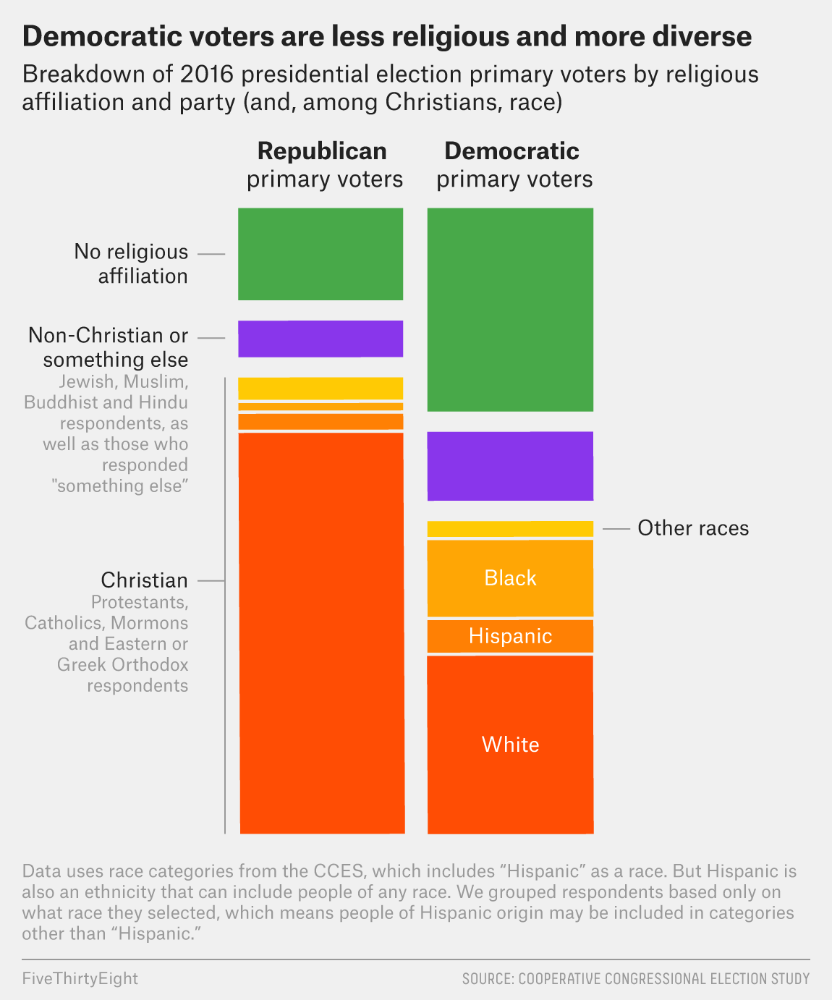
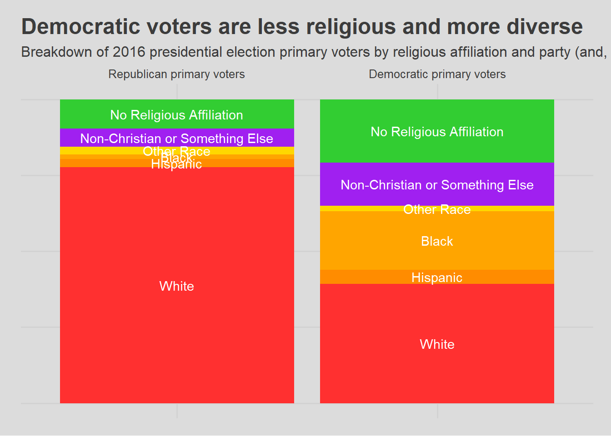

The data for this exercise was obtained from the Harvard Dataverse - Cooperative Congressional Election Study (CCES). This dataset was released in 2017 and contains “a nationally representative sample of 64,600 American adults” from 2016 (Ansolabehere and Schaffner 2018). A data dictionary/codebook was also available for view.
Because the original dataset was over 100 MB, a version with several variables removed was saved and used for this analysis. The original dataset can still be found and downloaded from the CCES site.
Original Plot

Graphical breakdown of voters for the two main political parties’ primaries in the United States
The data visualization first appeared on the site FiveThirtyEight in the article *Why Democrats Struggle to Motivate a ‘Religious Left’” (Thomson-DeVeaux 2019).
data <-read_tsv("data/CCES16_Common_OUTPUT_Feb2018_VV2.tab")
Warning: One or more parsing issues, call `problems()` on your data frame for details,
e.g.:
dat <- vroom(...)
problems(dat)
Rows: 64600 Columns: 525
── Column specification ────────────────────────────────────────────────────────
Delimiter: "\t"
chr (160): countyname, CurrentGovName, CurrentGovParty, CurrentHouseGender,...
dbl (361): tookpost, lookupzip, inputstate, cdid113, cdid115, countyfips, G...
time (4): starttime_pre, endtime_pre, starttime_post, endtime_post
ℹ Use `spec()` to retrieve the full column specification for this data.
ℹ Specify the column types or set `show_col_types = FALSE` to quiet this message.
Data Manipulation and Graphing
# Variables of Interest: ## CL_E2016PPEP (Political Party in 2016 Presidential Primary)data_specific <- data %>%select(CL_E2016PPEP, religpew, race, hispanic) %>%filter(CL_E2016PPEP =="REP"| CL_E2016PPEP =="DEM")### Rename REP/DEM to subgroups used in original graphdata_specific <- data_specific %>%mutate(CL_E2016PPEP =case_when( CL_E2016PPEP =="REP"~"Republican primary voters", CL_E2016PPEP =="DEM"~"Democratic primary voters"))### Change variable for political party into a factor so graph will be generated with ### Republican voters on the left every timedata_specific$CL_E2016PPEP <-factor(data_specific$CL_E2016PPEP, levels =c("Republican primary voters", "Democratic primary voters"))## pid3 (Political Identity) --> ended up not being relevant## Religion: Christian, Non-Christian/Something Else, No Religious Affiliationdata_specific <- data_specific %>%mutate(Religious_Affiliation =case_when( religpew ==1~"Christian", religpew ==2~"Christian", religpew ==3~"Christian", religpew ==4~"Christian", religpew ==5~"Non-Christian or Something Else", religpew ==6~"Non-Christian or Something Else", religpew ==7~"Non-Christian or Something Else", religpew ==8~"Non-Christian or Something Else", religpew ==12~"Non-Christian or Something Else", religpew ==11~"No Religious Affiliation",TRUE~"NA"))data_specific$Religious_Affiliation <-factor(data_specific$Religious_Affiliation, levels =c("No Religious Affiliation","Non-Christian or Something Else","Christian"))### Realization at this point there isn't a way to break a subgroup down by another ### variable, so will make another religion variable and break down Christianity ### specifically by race## Race/Ethnicity: Black, Hispanic, White, and Other Racesdata_specific <- data_specific %>%mutate(Racial_Group =case_when( race ==1~"White", race ==2~"Black", race ==3| hispanic ==1~"Hispanic", race ==4~"Other Race", race ==5~"Other Race", race ==6~"Other Race", race ==7~"Other Race")) %>%mutate(Christian_Racial_Group =case_when( Religious_Affiliation =="Christian"& Racial_Group =="Other Race"~"Other Race", Religious_Affiliation =="Christian"& Racial_Group =="Hispanic"~"Hispanic", Religious_Affiliation =="Christian"& Racial_Group =="Black"~"Black", Religious_Affiliation =="Christian"& Racial_Group =="White"~"White", Religious_Affiliation =="Non-Christian or Something Else"~"Non-Christian or Something Else", Religious_Affiliation =="No Religious Affiliation"~"No Religious Affiliation",TRUE~"NA"))### Ensure order is as appears on original graphdata_specific$Christian_Racial_Group <-factor(data_specific$Christian_Racial_Group, levels =c("No Religious Affiliation","Non-Christian or Something Else","Other Race", "Black", "Hispanic", "White"))# Ended up not needing: data_specific <- data_specific %>% arrange(Christian_Racial_Group)# %>% group_by(Christian_Racial_Group) %>% mutate(label_y = cumsum())## Make a Baseline Dataframedata_baseline <- data_specific %>%filter(Religious_Affiliation !="NA") %>%filter(Racial_Group !="NA") %>%filter(Christian_Racial_Group !="NA")## Investigate Proportion of Each Group### Create a Table That Calculates Total of Each Partyproportions_data_specific_total <- data_baseline %>%arrange(CL_E2016PPEP, rev(Christian_Racial_Group)) %>%group_by(CL_E2016PPEP) %>%count() %>%rename(total = n)### Calculate Proportions Based on Total of Each Partyproportions_data_specific <- data_baseline %>%arrange(CL_E2016PPEP, rev(Christian_Racial_Group)) %>%group_by(CL_E2016PPEP, Christian_Racial_Group) %>%count() %>%left_join(proportions_data_specific_total, by ="CL_E2016PPEP") %>%mutate(Percentage = n/total) %>%group_by(CL_E2016PPEP) %>%mutate(label_y =1- (cumsum(Percentage) -0.5* Percentage))# Data Visualizationggplot(data = proportions_data_specific, aes(x = CL_E2016PPEP, y = Percentage, group = Christian_Racial_Group, fill = Christian_Racial_Group)) +scale_x_discrete(position ="top") +scale_fill_manual(values =c(`No Religious Affiliation`="limegreen",`Non-Christian or Something Else`="purple",`Other Race`="gold", White ="firebrick1", Hispanic ="darkorange", Black ="orange")) +geom_col() +geom_text(aes(y = label_y, label = Christian_Racial_Group), colour ="white") +labs(title ="Democratic voters are less religious and more diverse", subtitle ="Breakdown of 2016 presidential election primary voters by religious affiliation and party (and, among Christians, race)") +theme_fivethirtyeight() +theme(axis.text.y =element_blank(), panel.background =element_rect(fill ="gainsboro"), plot.background =element_rect(fill ="gainsboro"), legend.position ="none", axis.ticks =element_blank())

Concluding Rationales
I decided to stop here, as I had already spent about 3-4 hours trying to get as close to the original graph as possible. The most difficult part of the exercise for me had been centering the group name exactly at the center of each “stack” in the bar graph. Through this experience, I have learned that even “professional” graphs can take quite a while to make.